Bengal
Interest has continued to centre round Gandhi’s march to the sea and the arrangements which he is making to initiate a campaign of civil disobedience. The extremist papers report his doings and speeches at great length and make a great display of the various meetings that are being held throughout Bengal and the resolutions passed thereat. But there is little enthusiasm for the form of civil disobedience favoured by Gandhi ...
Generally people are waiting to see what happens to Gandhi and the probability is that if any action is taken against him, a spark will be set to much inflammable material in Bengal. But the prospect of any serious conflagration is at present slight.
Central Provinces and Berar
In Nagpur these meetings were well attended and most of the schools and colleges were deserted on the 12th March to mark the inauguration of Gandhi’s march.
The boycott of liquor shops and the infringement of forest laws appear to be the most probable line of attack.
Punjab
It seems not improbable that organised attempts will be made to break the Salt Law in the Jhelum district; that the agitation relating to the non-payment of the water-tax in Multan will be revived; and that some movement in connection with the National Flag will be started probably at Gujranwala.
United Provinces
Political activity has undoubtedly intensified during the last fortnight. The Congress party feels that it must do something spectacular to sustain public interest. Enrolment of volunteers, propaganda in villages, preparations for breaking the salt laws on receipt of Mr. Gandhi’s orders are reported from a number of districts.
FOR THE FIRST HALF OF APRIL 1930
United Provinces
Events have moved rapidly during the fortnight. Apart from political meetings, processions and the enrolment of volunteers, the Salt Act has been openly defied at Agra, Cawnpore, Benaras, Allahabad, Lucknow, Meerut, Rae Bareli, Farukhabad, Etawah, Ballia and Mainpuri.
Pt. Jawaharlal Nehru was arrested at Cheoki railway station early on the morning of April 14 as he was proceeding to the Central Provinces to attend a meeting of Youth League. He was at once taken direct to Naini Central Jail, where he was tried and sentenced to six months simple imprisonment.
Bihar and Orissa
There have been, or are now materialising, spectacular, but small-scale, attempts at illicit salt manufacture in a few places ...
Central Provinces
In Jubbalpore Seth Govinddass has attempted to manufacture chemical salt at a cost many times in excess of the market price of clean salt.
Madras
Considerable opposition was shown at Vizagapatam to the Police when they attempted to seize salt made by boiling sea water, but elsewhere resistance to the seizure of illicit salt has been half hearted.
Bengal
In the mufassal efforts have been made to manufacture illicit salt, the main operation areas being the districts of 24-Parganas and Midnapore.
Very little salt has actually been manufactured and most of it has been confiscated and the utensils in which it was manufactured destroyed.
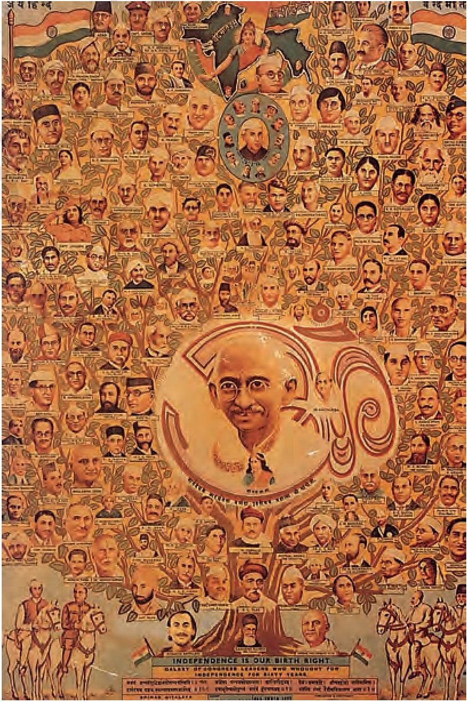
Fig. 13.17
Pictures like this reveal how Mahatma Gandhi was perceived by people and represented in popular prints
Within the tree of nationalism, Mahatma Gandhi appears as the looming central figure surrounded by small images of other leaders and sages.
I I
O Read the Fortnightly Reports carefully. Remember they are extracts from confidential reports of the colonial Home Department. These reports did not always accept what the police reported from different localities.
-
(1) How do you think the nature of the source affects what is being said in these reports? Write a short note illustrating your argument with quotations from the above text.
-
(2) Why do you think the Home Department was continuously reporting on what people thought about the possibility of Mahatma Gandhi’s arrest? Reread what Gandhiji said about the question of arrests in his speech on 5 April 1930 at Dandi.
-
(3) Why do you think Mahatma Gandhi was not arrested?
-
(4) Why do you think the Home Department continued to say that the march was not evoking any response?
i_____________________________________i
One more important source is contemporary newspapers, published in English as well as in the different Indian languages, which tracked Mahatma Gandhi’s movements and reported on his activities, and also represented what ordinary Indians thought of him. Newspaper accounts, however, should not be seen as unprejudiced. They were published by people who had their own political opinions and world views. These ideas shaped what was published and the way events were reported. The accounts that were published in a London newspaper would be different from the report in an Indian nationalist paper.
We need to look at these reports but should be careful while interpreting them. Every statement made in these cannot be accepted literally as representing what was happening on the ground. They often reflect the fears and anxieties of officials who were unable to control a movement and were anxious about its spread. They did not know whether to arrest Mahatma Gandhi or what an arrest would mean. The more the colonial state kept a watch on the public and its activities, the more it worried about the basis of its rule.
Timeline
|
1915 |
Mahatma Gandhi returns from South Africa |
|
1917 |
Champaran movement |
|
1918 |
Peasant movements in Kheda (Gujarat), and workers’ movement in Ahmedabad |
|
1919 |
Rowlatt Satyagraha (March-April) |
|
1919 |
Jallianwala Bagh massacre (April) |
|
1921 |
Non-cooperation and Khilafat Movements |
|
1928 |
Peasant movement in Bardoli |
|
1929 |
“Purna Swaraj” accepted as Congress goal at the Lahore Congress (December) |
|
1930 |
Civil Disobedience Movement begins; Dandi March (March-April) |
|
1931 |
Gandhi-Irwin Pact (March); Second Round Table Conference (December) |
|
1935 |
Government of India Act promises some form of representative government |
|
1939 |
Congress ministries resign |
|
1942 |
Quit India Movement begins (August) |
|
1946 |
Mahatma Gandhi visits Noakhali and other riot-torn areas to stop communal violence |
|
-
1. How did Mahatma Gandhi seek to identify with the common people?
-
2. How was Mahatma Gandhi perceived by the peasants?
-
3. Why did the salt laws become an important issue of struggle?
-
4. Why are newspapers an important source for the study of the national movement?
-
5. Why was the charkha chosen as a symbol of nationalism?
Write a short essay
Jr (250-300 words) on the following:
-
6. How was non-cooperation a form of protest?
-
7. Why were the dialogues at the Round Table Conference inconclusive?
-
8. In what way did Mahatma Gandhi transform the nature of the national movement?
-
9. What do private letters and autobiographies tell us about an individual? How are these sources different from official accounts?
r ' Map work
-
10. Find out about the route of the Dandi March. On a map of Gujarat plot the line of the march and mark the major towns and villages that it passed along the route.
-
11. Read any two autobiographies of nationalist leaders. Look at the different ways in which the authors represent their own life and times, and interpret the national movement. See how their views differ. Write an account based on your studies.
-
12. Choose any event that took place during the national movement. Try and read the letters and speeches of the leaders of the time. Some of these are now published. He could be a local leader from the region where you live. Try and see how the local leaders viewed the activities of the national leadership at the top. Write about the movement based on your reading.
If you would like to know more, read:
Sekhar Bandyopadhyay. 2004-From Plassey to Partition: A History of Modern India. Orient Longman, New Delhi.
Sarvepalli Gopal. 1975.
J a waharlal Nehru: A Biogra phy Volume I, 1889-1947-
Oxford University Press, Delhi.
David Hardiman. 2003.
Gandhi in His Time and Ours.
Permanent Black, New Delhi.
Gyanendra Pandey. 1978. The Ascendancy of the Congress in Uttar Pradesh. 1926-34.
Oxford University Press, Delhi.
Sumit Sarkar. 1983.
Modern India, 1885-1947-Macmillan, New Delhi.
You could visit:
http:Zwww.gandhiserve.org/ cwmg/cwmg.html
(for Collected Works of Mahatma Gandhi)
Understanding Partition
Politics, memories, Experiences
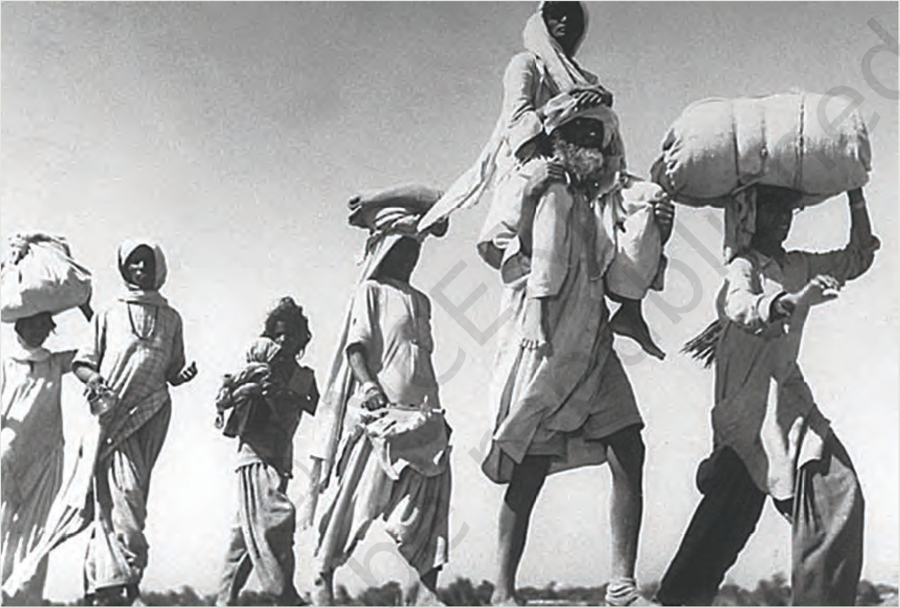
Fig. 14.1
Partition uprooted millions, transforming them into refugees, forcing them to begin life from scratch in new lands.
We know that the joy of our country’s independence from colonial rule in 1947 was tarnished by the violence and brutality of Partition. The Partition of British India into the sovereign states of India and Pakistan (with its western and eastern wings) led to many sudden developments. Thousands of lives were snuffed out, many others changed dramatically, cities changed, India changed, a new country was born, and there was unprecedented genocidal violence and migration.
This chapter will examine the history of Partition: why and how it happened as well as the harrowing experiences of ordinary people during the period 1946-50 and beyond. It will also discuss how the history of these experiences can be reconstructed by talking to people and interviewing them, that is, through the use of oral history. At the same time, it will point out the strengths and limitations of oral history. Interviews can tell us about certain aspects of a society’s past of which we may know very little or nothing from other types of sources. But they may not reveal very much about many matters whose history we would then need to build from other materials. We will return to this issue towards the end of the chapter.
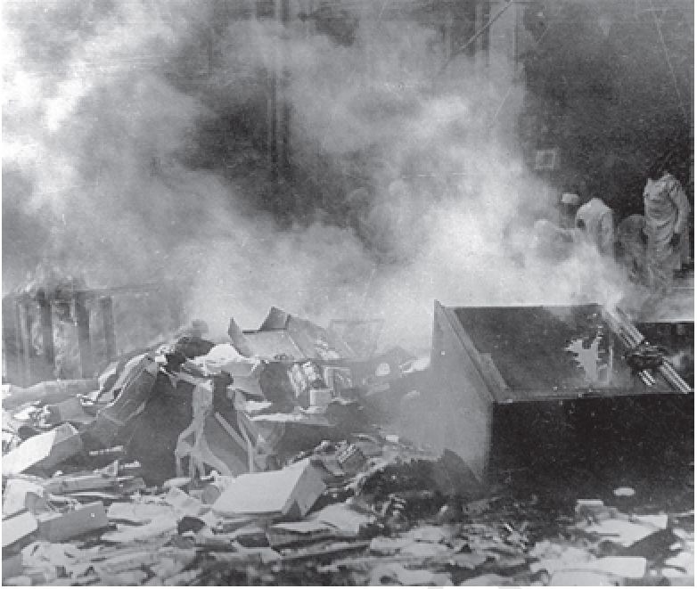
Fig. 14.2
Photographs give us a glimpse of the violence of that time.
1. Some Partition Experiences
Here are three incidents narrated by people who experienced those trying times to a researcher in 1993. The informants were Pakistanis, the researcher Indian. The job of this researcher was to understand how those who had lived more or less harmoniously for generations inflicted so much violence on each other in 1947.
Source 1
“I am simply returning my father’s karz, his debt”
This is what the researcher recorded:
During my visits to the History Department Library of Punjab University, Lahore, in the winter of 1992, the librarian, Abdul Latif, a pious middle-aged man, would help me a lot. He would go out of his way, well beyond the call of duty, to provide me with relevant material, meticulously keeping photocopies requested by me ready before my arrival the following morning. I found his attitude to my work so extraordinary that one day I could not help asking him, “Latif Sahib, why do you go out of your way to help me so much?” Latif Sahib glanced at his watch, grabbed his namazi topi and said, “I must go for namaz right now but I will answer your question on my return.” Stepping into his office half an hour later, he continued:
“Yes, your question. I... I mean, my father belonged to Jammu, to a small village in Jammu district. This was a Hindu-dominated village and Hindu ruffians of the area massacred the hamlet’s Muslim population in August 1947. One late afternoon, when the Hindu mob had been at its furious worst, my father discovered he was perhaps the only Muslim youth of the village left alive. He had already lost his entire family in the butchery and was looking for ways of escaping. Remembering a kind, elderly Hindu lady, a neighbour, he implored her to save him by offering him shelter at her place. The lady agreed to help father but said, ‘Son, if you hide here, they will get both of us. This is of no use. You follow me to the spot where they have piled up the dead. You lie down there as if dead and I will dump a few dead-bodies on you. Lie there among the dead, son, as if dead through the night and run for your life towards Sialkotat the break of dawn tomorrow.’
“My father agreed to the proposal. Off they went to that spot, father lay on the ground and the old lady dumped a number of bodies on him. An hour or so later a group of armed Hindu hoodlums appeared. One of them yelled, ‘Any life left in anybody?’ and the others started, with their crude staffs and guns, to feel for any trace of life in that heap. Somebody shouted, ‘There is a wrist watch on that body!’ and hit my father’s fingers with the butt of his rifle. Father used to tell us how difficult it was for him to keep his outstretched palm, beneath the watch he was wearing, so utterly still. Somehow he succeeded for a few seconds until one of them said ‘Oh, it’s only a watch. Come let us leave, it is getting dark.’ Fortunately, for Abbaji, they left and my father lay there in that wretchedness the whole night, literally running for his life at the first hint of light. He did not stop until he reached Sialkot.
“I help you because that Hindu mai helped my father. I am simply returning my father’s karz, his debt.”
“But I am not a Hindu,” I said. “Mine is a Sikh family, at best a mixed Hindu-Sikh one.”
“I do not know what your religion is with any surety. You do not wear uncut hair and you are not a Muslim. So, for me you are a Hindu and I do my little bit for you because a Hindu mai saved my father. ”
Source 2
“For quite a few years now, I have not met a Punjabi Musalman”
The researcher’s second story is about the manager of a youth hostel in Lahore.
I had gone to the hostel looking for accommodation and had promptly declared my citizenship. “You are Indian, so I cannot allot you a room but I can offer you tea and a story,” said the Manager. I couldn’t have refused such a tempting offer. “In the early 1950s I was posted at Delhi,” the Manager began.
I was all ears:
“I was working as a clerk at the Pakistani High Commission there and I had been asked by a Lahori friend to deliver a rukka (a short handwritten note) to his erstwhile neighbour who now resided at Paharganj in Delhi. One day I rode out on my bicycle towards Paharganj and just as I crossed the cathedral at the Central Secretariat, spotting a Sikh cyclist I asked him in Punjabi, ‘Sardarji, the way to Paharganj, please?’
‘Are you a refugee?’ he asked.
‘No, I come from Lahore. I am Iqbal Ahmed.’
‘Iqbal Ahmed ... from Lahore? Stop!’
“That ‘Stop!’ sounded like a brute order to me and I instantly thought now I’ll be gone. This Sikh will finish me off. But there was no escaping the situation, so I stopped. The burly Sikh came running to me and gave me a mighty hug. Eyes moist, he said, ‘For quite a few years now, I have not met a Punjabi Musalman. I have been longing to meet one but you cannot find Punjabi-speaking Musalmans here.'"
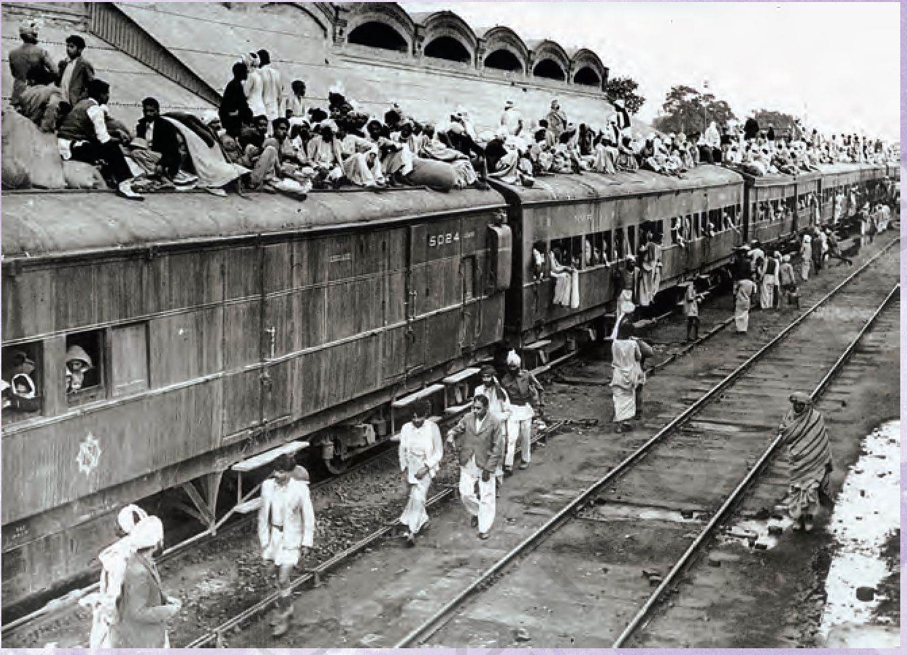
Fig. 14.3
Over 10 million people were uprooted from their homelands and forced to migrate.
Source 3
“No, no! You can never be ours”
This is the third story the researcher related:
I still vividly remember a man I met in Lahore in 1992. He mistook me to be a Pakistani studying abroad. For some reason he liked me. He urged me to return home after completing my studies to serve the qaum (nation). I told him I shall do so but, at some stage in the conversation, I added that my citizenship happens to be Indian. All of a sudden his tone changed, and much as he was restraining himself, he blurted out,
“Oh Indian! I had thought you were Pakistani.” I tried my best to impress upon him that I always see myself as South Asian. “No, no! You can never be ours. Your people wiped out my entire village in 1947, we are sworn enemies and shall always remain so.”
c
-
(1) What do each of these sources show about the attitudes of the men who were talking with each other?
-
(2) What do you think these stories reveal about the different memories that people carried about Partition?
-
(3) How did the men identify themselves and one another?
O Discuss...
Assess the value of such stories in writing about Partition.
The narratives just presented point to the pervasive violence that characterised Partition. Several hundred thousand people were killed and innumerable women raped and abducted. Millions were uprooted, transformed into refugees in alien lands. It is impossible to arrive at any accurate estimate of casualties: informed and scholarly guesses vary from 200,000 to 500,000 people. In all probability, some 15 million had to move across hastily constructed frontiers separating India and Pakistan. As they stumbled across these “shadow lines” - the boundaries between the two new states were not officially known until two days after formal independence - they were rendered homeless, having suddenly lost all their immovable property and most of their movable assets, separated from many of their relatives and friends as well, torn asunder from their moorings, from their houses, fields and fortunes, from their childhood memories. Thus stripped of their local or regional cultures, they were forced to begin picking up their life from scratch.
Fig. 14.4
On carts with families and belongings, 1947
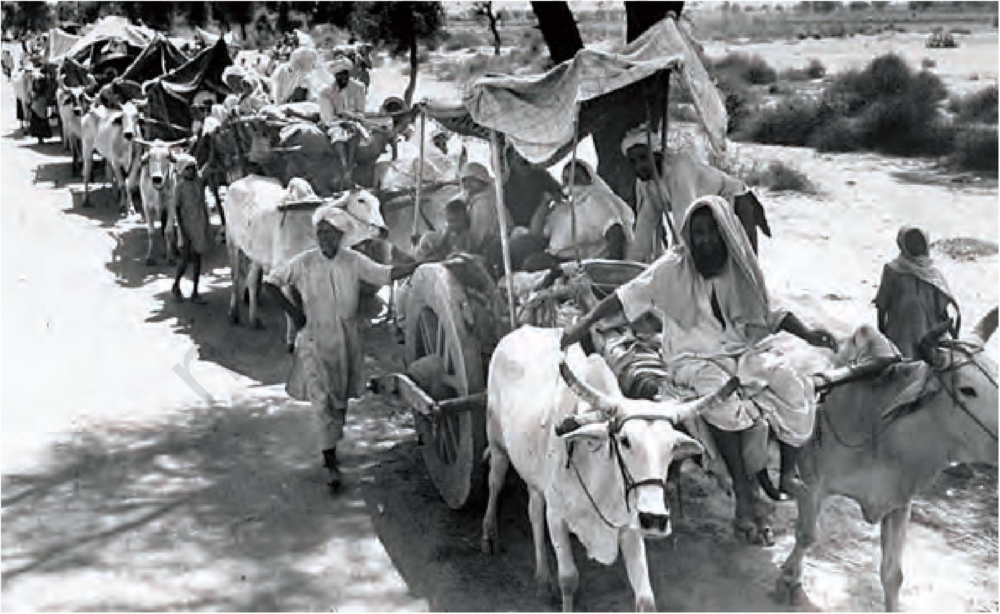
Was this simply a partition, a more or less orderly constitutional arrangement, an agreed-upon division of territories and assets? Or should it be called a sixteenmonth civil war, recognising that there were well-organised forces on both sides and concerted attempts to wipe out entire populations as enemies? The survivors themselves have often spoken of 1947 through other words: “maashal-lci (martial law), “mara-mart (killings), and “raula”, or “hullaf’ (disturbance, tumult, uproar). Speaking of the killings, rape, arson, and loot that constituted Partition, contemporary observers and scholars have sometimes used the expression “holocaust” as well, primarily meaning destruction or slaughter on a mass scale.
Is this usage appropriate?
You would have read about the German Holocaust under the Nazis in Class IX. The term “holocaust” in a sense captures the gravity of what happened in the subcontinent in 1947, something that the mild term “partition” hides. It also helps to focus on why Partition, like the Holocaust in Germany, is remembered and referred to in our contemporary concerns so much. Yet, differences between the two events should not be overlooked. In 1947-48, the subcontinent did not witness any state-driven extermination as was the case with Nazi Germany where various modern techniques of control and organisation had been used. The “ethnic cleansing” that characterised the partition of India was carried out by self-styled representatives of religious communities rather than by state agencies.
India-haters in Pakistan and Pakistan-haters in India are both products of Partition. At times, some people mistakenly believe that the loyalties of Indian Muslims lie with Pakistan. The stereotype of extra-territorial, pan-Islamic loyalties comes fused with other highly objectionable ideas: Muslims are cruel, bigoted, unclean, descendants of invaders, while Hindus are kind, liberal, pure, children of the invaded. The journalist R.M. Murphy has shown that similar stereotypes proliferate in Pakistan. According to him, some Pakistanis feel that Muslims are fair, brave, monotheists and meat-eaters, while Hindus are dark, cowardly, polytheists and vegetarian. Some of these stereotypes pre-date Partition but there is no
O Discuss...
Recall some stories of Partition you may have heard. Think of the way these have shaped your conception about different communities.
Try and imagine how the same stories would be narrated by different communities.
Fig. 14.5
People took with them only what they could physically carry.
Uprooting meant an immense sense of loss, a rupture with the place they had lived In for generations.
doubt that they were immensely strengthened because of 1947. Every myth in these constructions has been systematically critiqued by historians. But in both countries voices of hatred do not mellow.
Partition generated memories, hatreds, stereotypes and identities that still continue to shape the history of people on both sides of the border. These hatreds have manifested themselves during inter-community conflicts, and communal clashes in turn have kept alive the memories of past violence. Stories of Partition violence are recounted by communal groups to deepen the divide between communities: creating in people’s minds feelings of suspicion and distrust, consolidating the power of communal stereotypes, creating the deeply problematic notion that Hindus, Sikhs and Muslims are communities with sharply defined boundaries, and fundamentally opposed interests.
The relationship between Pakistan and India has been profoundly shaped by this legacy of Partition. Perceptions of communities on both sides have been structured by the conflicting memories of those momentous times.
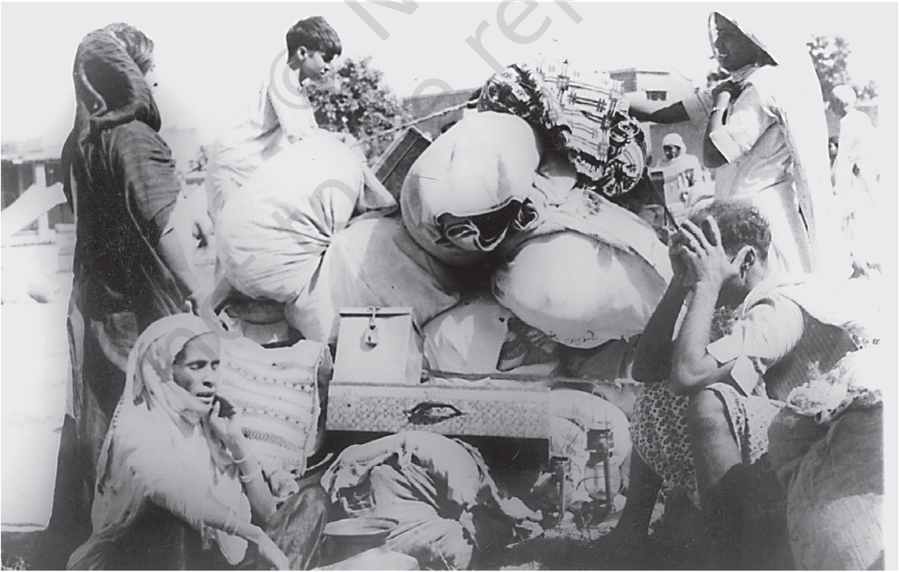
Some historians, both Indian and Pakistani, suggest that Mohammad Ali Jinnah’s theory that the Hindus and Muslims in colonial India constituted two separate nations can be projected back into medieval history. They emphasise that the events of 1947 were intimately connected to the long history of Hindu-Muslim conflict throughout medieval and modern times. Such an argument does not recognise that the history of conflict between communities has coexisted with a long history of sharing, and of mutual cultural exchange. It also does not take into account the changing circumstances that shape people’s thinking.
Some scholars see Partition as a culmination of a communal politics that started developing in the opening decades of the twentieth century. They suggest that separate electorates for Muslims, created by the colonial government in 1909 and expanded in 1919, crucially shaped the nature of communal politics. Separate electorates meant that Muslims could now elect their own representatives in designated constituencies. This created a temptation for politicians working within this system to use sectarian slogans and gather a following by distributing favours to their own religious groups. Religious identities thus acquired a functional use within a modern political system; and the logic of electoral politics deepened and hardened these identities. Community identities no longer indicated simple difference in faith and belief; they came to mean active opposition and hostility between communities. However, while separate electorates did have a profound impact on Indian politics, we should be careful not to over-emphasise their significance or to see Partition as a logical outcome of their working.
Communal identities were consolidated by a host of other developments in the early twentieth century. During the 1920s and early 1930s tension grew around a number of issues. Muslims were angered by “music-before-mosque”, by the cow protection movement, and by the efforts of the Arya Samaj to bring back to the Hindu fold (shuddhi) those who had recently converted to Islam. Hindus were angered by the rapid spread of tabligh (propaganda) and tanzim (organisation) after 1923. As middle class publicists and communal activists sought to build greater solidarity within their communities, mobilising people against the other community, riots spread in different parts of the country. Every communal riot deepened differences between communities, creating disturbing memories of violence.
The Lucknow Pact
The Lucknow Pact of December 1916 was an understanding between the Congress and the Muslim League (controlled by the UP-based “Young Party”) whereby the Congress accepted separate electorates. The pact provided a joint political platform for the Moderates, Radicals and the Muslim League.
Arya Samaj
A North Indian Hindu reform organisation of the late nineteenth and early twentieth centuries, particularly active in the Punjab, which sought to revive Vedic learning and combine it with modern education in the sciences.
Music-before-mosque : The playing of music by a religious procession outside a mosque at the time of namaz could lead to Hindu-Muslim violence. Orthodox Muslims saw this as an interference in their peaceful communion with God.
Yet it would be incorrect to see Partition as the outcome of a simple unfolding of communal tensions. As the protagonist of Garm Hawa, a film on Partition, puts it, “Communal discord happened even before 1947 but it had never led to the uprooting of millions from their homes”. Partition was a qualitatively different phenomenon from earlier communal politics, and to understand it we need to look carefully at the events of the last decade of British rule.
What is communalism?
There are many aspects to our identity. You are a girl or a boy, all of you are young persons, you belong to a certain village, city, district or state and speak certain languages. You are Indians but you are also world citizens. Income levels differ from family to family, hence all of us belong to some social class or the other. Most of us have a religion, and caste may play an important role in our lives. In other words, our identities have numerous features, they are complex. There are times, however, when people attach greater significance to certain chosen aspects of their identity such as religion. This in itself cannot be described as communal.
Communalism refers to a politics that seeks to unify one community around a religious identity in hostile opposition to another community. It seeks to define this community identity as fundamental and fixed. It attempts to consolidate this identity and present it as natural - as if people were born into the identity, as if the identities do not evolve through history over time. In order to unify the community, communalism suppresses distinctions within the community and emphasises the essential unity of the community against other communities.
One could say communalism nurtures a politics of hatred for an identified “other”-“Hindus” in the case of Muslim communalism, and “Muslims” in the case of Hindu communalism. This hatred feeds a politics of violence.
Communalism, then, is a particular kind of politicisation of religious identity, an ideology that seeks to promote conflict between religious communities. In the context of a multi-religious country, the phrase “religious nationalism” can come to acquire a similar meaning. In such a country, any attempt to see a religious community as a nation would mean sowing the seeds of antagonism against some other religion/s.
the Congress ministries
In 1937, elections to the provincial legislatures were held for the first time. Only about 10 to 12 per cent of the population enjoyed the right to vote. The Congress did well in the elections, winning an absolute majority in five out of eleven provinces and forming governments in seven of them. It did badly in the constituencies reserved for Muslims, but the Muslim League also fared poorly, polling only 4.4 per cent of the total Muslim vote cast in this election. The League failed to win a single seat in the North West Frontier Province (NWFP) and could capture only two out of 84 reserved constituencies in the Punjab and three out of 33 in Sind.
In the United Provinces, the Muslim League wanted to form a joint government with the Congress. The Congress had won an absolute majority in the province, so it rejected the offer. Some scholars argue that this rejection convinced the League that if India remained united, then Muslims would find it difficult to gain political power because they would remain a minority. The League assumed, of course, that only a Muslim party could represent Muslim interests, and that the Congress was essentially a Hindu party. But Jinnah’s insistence that the League be recognised as the “sole spokesman” of Muslims could convince few at the time. Though popular in the United Provinces, Bombay and Madras, social support for the League was still fairly weak in three of the provinces from which Pakistan was to be carved out just ten years later - Bengal, the NWFP and the Punjab. Even in Sind it failed to form a government. It was from this point onwards that the League doubled its efforts at expanding its social support.
The Congress ministries also contributed to the widening rift. In the United Provinces, the party had rejected the Muslim League proposal for a coalition government partly because the League tended to support landlordism, which the Congress wished to abolish, although the party had not yet taken any concrete steps in that direction. Nor did the Congress achieve any substantial gains in the “Muslim mass contact” programme it launched. In the end, the secular and radical rhetoric of the Congress merely alarmed conservative Muslims and the Muslim landed elite, without winning over the Muslim masses.
The Muslim League
Initially floated in Dhaka in 1906, the Muslim League was quickly taken over by the U.P.-based Muslim elite. The party began to make demands for autonomy for the Muslim-majority areas of the subcontinent and/or Pakistan in the 1940s.
Hindu Mahasabha
Founded in 1915, the Hindu Mahasabha was a Hindu party that remained confined to North India. It aimed to unite Hindu society by encouraging the Hindus to transcend the divisions of caste and sect. It sought to define Hindu identity in opposition to Muslim identity.
Confederation - in modern political language it refers to a union of fairly autonomous and sovereign states with a central government with delimited powers
The name “Pakistan”
The name Pakistan or Pak-stan (from Punjab, Afghan, Kashmir, Sind and Baluchistan) was coined by a Punjabi Muslim student at Cambridge, Choudhry Rehmat Ali, who, in pamphlets written in 1933 and 1935, desired a separate national status for this new entity. Noone took Rehmat Ali seriously in the 1930s, least of all the League and other Muslim leaders who dismissed his idea merely as a student’s dream.
Moreover, while the leading Congress leaders in the late 1930s insisted more than ever before on the need for secularism, these ideas were by no means universally shared lower down in the party hierarchy, or even by all Congress ministers. Maulana Azad, an important Congress leader, pointed out in 1937 that members of the Congress were not allowed to join the League, yet Congressmen were active in the Hindu Mahasabha-at least in the Central Provinces (present-day Madhya Pradesh). Only in December 1938 did the Congress Working Committee declare that Congress members could not be members of the Mahasabha. Incidentally, this was also the period when the Hindu Mahasabha and the Rashtriya Swayamsevak Sangh (RSS) were gaining strength. The latter spread from its Nagpur base to the United Provinces, the Punjab, and other parts of the country in the 1930s. By 1940, the RSS had over 100,000 trained and highly disciplined cadres pledged to an ideology of Hindu nationalism, convinced that India was a land of the Hindus.
The Pakistan demand was formalised gradually. On 23 March 1940, the League moved a resolution demanding a measure of autonomy for the Muslim-majority areas of the subcontinent. This ambiguous resolution never mentioned partition or Pakistan. In fact Sikandar Hayat Khan, Punjab Premier and leader of the Unionist Party, who had drafted the resolution, declared in a Punjab assembly speech on 1 March 1941 that he was opposed to a Pakistan that would mean “Muslim Raj here and Hindu Raj elsewhere ... If Pakistan means unalloyed Muslim Raj in the Punjab then I will have nothing to do with it.” He reiterated his plea for a loose (united), confederation with considerable autonomy for the confederating units.
The origins of the Pakistan demand have also been traced back to the Urdu poet Mohammad Iqbal, the writer of “Sare Jahan Se Achha Hindustan Hamara”. In his presidential address to the Muslim League in 1930, the poet spoke of a need for a “NorthWest Indian Muslim state”. Iqbal, however, was not visualising the emergence of a new country in that speech but a reorganisation of Muslim-majority areas in north-western India into an autonomous unit within a single, loosely structured Indian federation.
We have seen that the League itself was vague about its demand in 1940. There was a very short time - just seven years - between the first formal articulation of the demand for a measure of autonomy for the Muslim-majority areas of the subcontinent and Partition. No one knew what the creation of Pakistan meant, and how it might shape people’s lives in the future. Many who migrated from their homelands in 1947 thought they would return as soon as peace prevailed again.
Initially even Muslim leaders did not seriously raise the demand for Pakistan as a sovereign state. In the beginning Jinnah himself may have seen the Pakistan idea as a bargaining counter, useful for blocking possible British concessions to the Congress and gaining additional favours for the Muslims. The pressure of the Second World War on the British delayed negotiations for independence for some time. Nonetheless, it was the massive Quit India Movement which started in 1942, and persisted despite intense repression, that brought the British Raj to its knees and compelled its officials to open a dialogue with Indian parties regarding a possible transfer of power.
When negotiations were begun again in 1945, the British agreed to create an entirely Indian central Executive Council, except for the Viceroy and the Commander-in-Chief of the armed forces, as a preliminary step towards full independence. Discussions about the transfer of power broke down due to Jinnah’s unrelenting demand that the League had an absolute right to choose all the Muslim members of the Executive Council and that there should be a kind of communal veto in the Council, with decisions opposed by Muslims needing a two-thirds majority. Given the existing political situation, the League’s first demand was quite extraordinary, for a large section of the nationalist Muslims supported the Congress (its delegation for these discussions was headed by Maulana Azad), and in West Punjab members of the Unionist Party were
The Muslim League resolution of 1940
The League’s resolution of 1940 demanded:
that geographically contiguous units are demarcated into regions, which should be so constituted, with such territorial readjustments as may be necessary, that the areas in which the Muslims are numerically in a majority as in the north-western and eastern zones of India should be grouped to constitute “Independent States”, in which the constituent units shall be autonomous and sovereign.
I !-----------!
। O What was the League ।
। demanding? Was it demanding Pakistan as
I we know it today?
I___________I
_____________________________________I
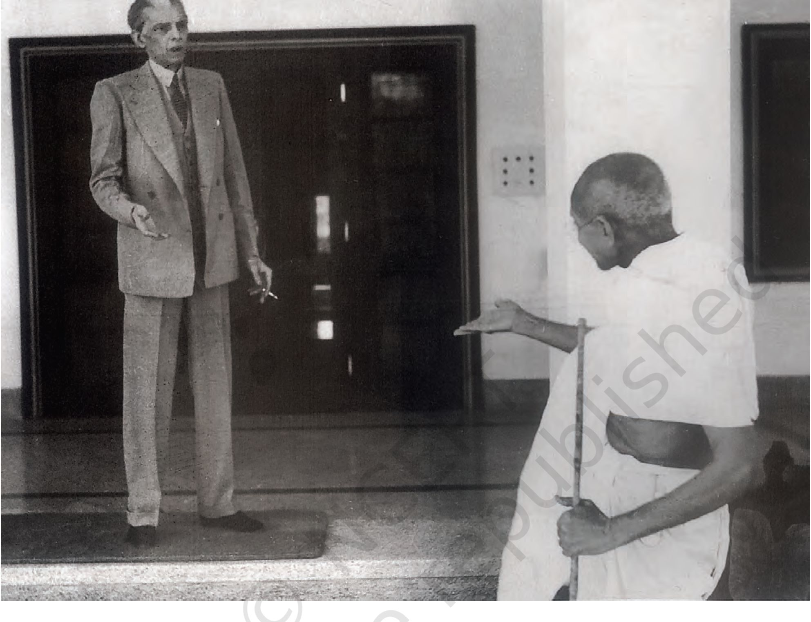
Fig. 14.6
Mahatma Gandhi with Mohammad AU Jinnah before a meeting with the Viceroy in November 1939
Unionist Party
A political party representing the interests of landholders -Hindu, Muslim and Sikh - in the Punjab. The party was particularly powerful during the period 1923-47.
largely Muslims. The British had no intention of annoying the Unionists who still controlled the Punjab government and had been consistently loyal to the British.
Provincial elections were again held in 1946. The Congress swept the general constituencies, capturing 91.3 per cent of the non-Muslim vote. The League’s success in the seats reserved for Muslims was equally spectacular: it won all 30 reserved constituencies in the Centre with 86.6 per cent of the Muslim vote and 442 out of 509 seats in the provinces. Only as late as 1946, therefore, did the League establish itself as the dominant party among Muslim voters, seeking to vindicate its claim to be the “sole spokesman” of India’s Muslims. You will, however, recall that the franchise was extremely limited. About 10 to 12 per cent of the population enjoyed the right to vote in the provincial elections and a mere one per cent in the elections for the Central Assembly.
In March 1946 the British Cabinet sent a three-member mission to Delhi to examine the League’s demand and to suggest a suitable political framework for a free India. The Cabinet Mission toured the country for three months and recommended a loose three-tier confederation. India was to remain united.
It was to have a weak central government controlling only foreign affairs, defence and communications with the existing provincial assemblies being grouped into three sections while electing the constituent assembly: Section A for the Hindu-majority provinces, and Sections B and C for the Muslim-majority provinces of the north-west and the north-east (including Assam) respectively. The sections or groups of provinces would comprise various regional units. They would have the power to set up intermediate-level executives and legislatures of their own.
Secede means to withdraw formally from an association or organisation.
Fig. 14.7
Mahatma Gandhi tn the NWFP, October 1938 with Khan Abdul Ghqffar Khan (who came to be known as Frontier Gandhi), Sushila Nayar and Amtus Salem
Initially all the major parties accepted this plan. But the agreement was short-lived because it was based on mutually opposed interpretations of the plan. The League wanted the grouping to be compulsory, with Sections B and C developing into strong entities with the right to secede from the Union in the future. The Congress wanted that provinces be given the right to join a group. It was not satisfied with the Mission’s clarification that grouping would be compulsory at first, but provinces would have the right to opt out after the constitution had been finalised and new elections held in accordance with it. Ultimately, therefore, neither the League nor the Congress agreed to the Cabinet Mission’s proposal. This was a most crucial juncture, because after this partition became more or less inevitable, with most of the Congress leaders agreeing to it, seeing it as tragic but unavoidable. Only Mahatma Gandhi and Khan Abdul Ghaffar Khan of the NWFP continued to firmly oppose the idea of partition.
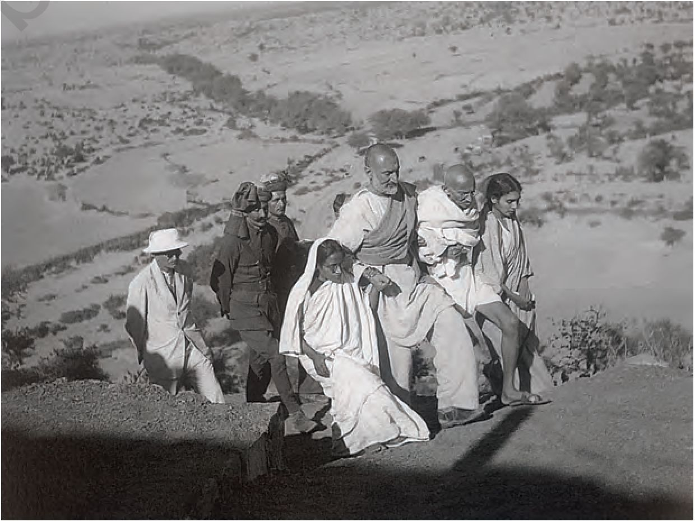
Map 1
The Cabinet Mission proposal for an Indian federation with three sections
Muslim-majortty areas of 1941
Hindu-majarity areas of 1941
Princely states not specifically provided for in the proposal
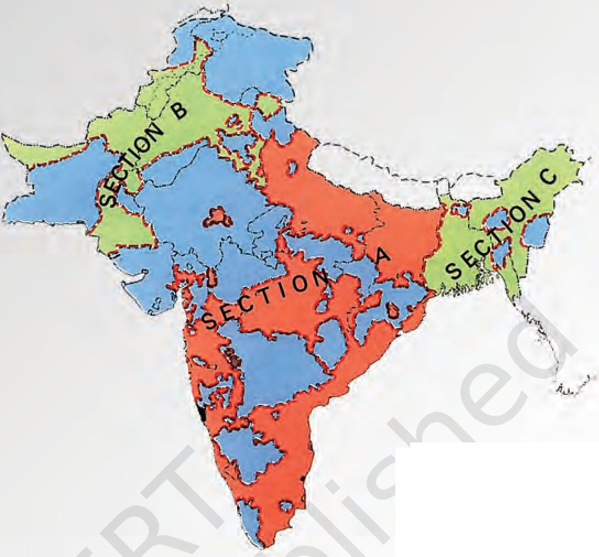
Sketch map not to scale
Source 5
“A voice in the wilderness”
I-------------
I O What are the arguments
| that Mahatma Gandhi offers in | opposing the idea of Pakistan?
i_____________
Mahatma Gandhi knew that his was “a voice in the wilderness” but he nevertheless continued to oppose the idea of Partition:
But what a tragic change we see today. I wish the day may come again when Hindus and Muslims will do nothing without mutual consultation. I am day and night tormented by the question what I can do to hasten the coming of that day. I appeal to the League not to regard any Indian as its enemy ... Hindus and Muslims are born of the same soil. They have the same blood, eat the same food, drink the same water and speak the same language.
Speech at prayer meeting, 7 September 1946,
CWMGvol. 92, p.139
But I am firmly convinced that the Pakistan demand as put forward by the Muslim League is un-Islamic and I have not hesitated to call it sinful. Islam stands for the unity and brotherhood of mankind, not for disrupting the oneness of the human family. Therefore, those who want to divide India into possible warring groups are enemies alike of Islam and India. They may cut me to pieces but they cannot make me subscribe to something which I consider to be wrong.
Harman, 26 September 1946, CWMG, vol. 92, p.229
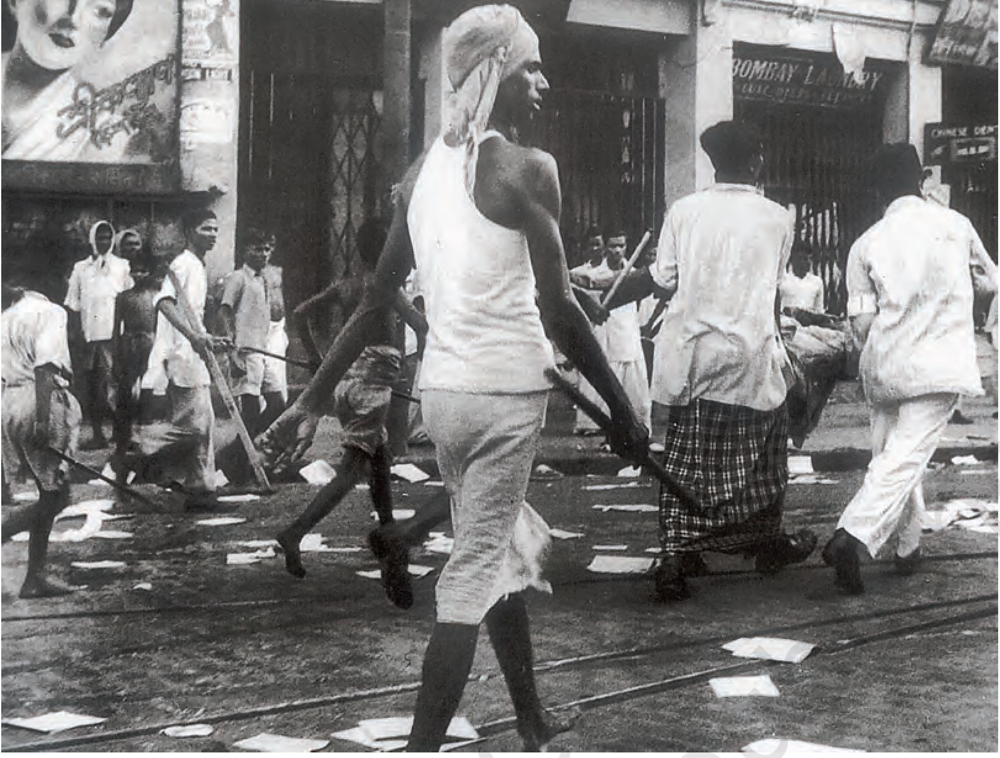
-
3.7 Towards Partition
Fig. 14.8
Rioters armed with iron rods and lathis on the streets of Calcutta, August 1946
After withdrawing its support to the Cabinet Mission plan, the Muslim League decided on “Direct Action” for winning its Pakistan demand. It announced 16 August 1946 as “Direct Action Day”. On this day, riots broke out in Calcutta, lasting several days and leaving several thousand people dead. By March 1947 violence spread to many parts of northern India.
It was in March 1947 that the Congress high command voted for dividing the Punjab into two halves, one with Muslim majority and the other with Hindu/Sikh majority; and it asked for the application of a similar principle to Bengal. By this time, given the numbers game, many Sikh leaders and Congressmen in the Punjab were convinced that Partition was a necessary evil, otherwise they would be swamped by Muslim majorities and Muslim leaders would dictate terms. In Bengal too a section of bhadralok Bengali Hindus, who wanted political power to remain with them, began to fear the “permanent tutelage of Muslims” (as one of their leaders put it). Since they were in a numerical minority, they felt that only a division of the province could ensure their political dominance.
O Discuss...
It is evident from a reading of section 3 that a number of factors led to Partition. Which of these do you think were the most important and why?
The bloodbath continued for about a year from March 1947 onwards. One main reason for this was the collapse of the institutions of governance. Penderel Moon, an administrator serving in Bahawalpur (in present-day Pakistan) at the time, noted how the police failed to fire even a single shot when arson and killings were taking place in Amritsar in March 1947.
Amritsar district became the scene of bloodshed later in the year when there was a complete breakdown of authority in the city. British officials did not know how to handle the situation: they were unwilling to take decisions, and hesitant to intervene. When panic-stricken people appealed for help, British officials asked them to contact Mahatma Gandhi, Jawaharlal Nehru, Vallabh Bhai Patel or M.A. Jinnah. Nobody knew who could exercise authority and power. The top leadership of the Indian parties, barring Mahatma Gandhi, were involved in negotiations regarding independence while many Indian civil servants in the affected provinces feared for their own lives and property. The British were busy preparing to quit India.
Problems were compounded because Indian soldiers and policemen came to act as Hindus, Muslims or Sikhs. As communal tension mounted, the professional commitment of those in uniform could not be relied upon. In many places not only did policemen help their co-religionists but they also attacked members of other communities.
Amidst all this turmoil, one man’s valiant efforts at restoring communal harmony bore fruit. The 77-year-old Gandhiji decided to stake his all in a bid to vindicate his lifelong principle of non-violence, and his conviction that people’s hearts could be changed. He moved from the villages of Noakhali in East Bengal (present-day Bangladesh) to the villages of Bihar and then to the riot-torn slums of Calcutta and Delhi, in a heroic effort to stop Hindus and Muslims kill each other, careful everywhere to reassure the minority community. In October 1946, Muslims in East Bengal targeted Hindus. Gandhiji visited the area, toured the villages on foot, and persuaded the local Muslims to guarantee the safety of Hindus. Similarly, in other places such as Delhi he tried to build a spirit of mutual trust and
Fig. 14.10
Villagers of Noakhali hope for a glimpse of Mahatma Gandhi
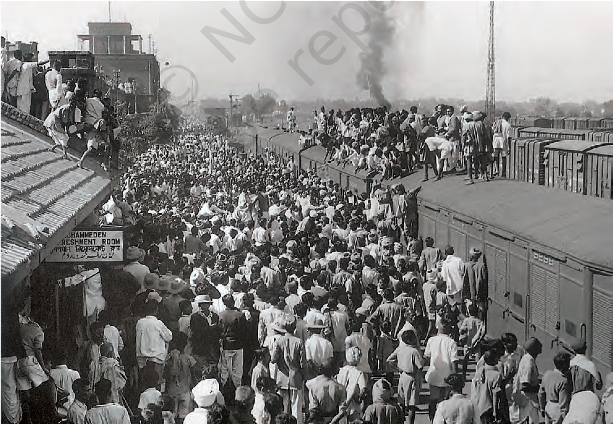
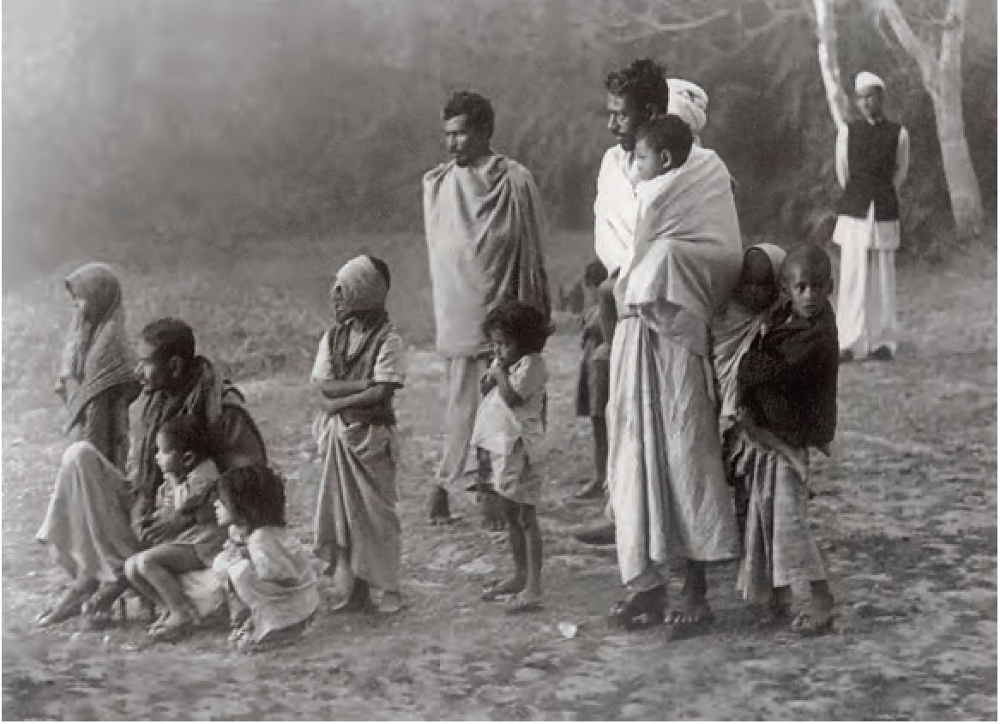
confidence between the two communities. A Delhi Muslim, Shahid Ahmad Dehlavi, compelled to flee to a dirty, overcrowded camp in Purana Qila, likened Gandhiji’s arrival in Delhi on 9 September 1947 to “the arrival of the rains after a particularly long and harsh summer”. Dehlavi recalled in his memoir how Muslims said to one another: “Delhi will now be saved”.
On 28 November 1947, on the occasion of Guru Nanak’s birthday, when Gandhiji went to address a meeting of Sikhs at
Fig. 14.11
Villagers of a riot-tom village awaiting the arrival of Mahatma Gandhi
O Discuss...
What did the British do to maintain peace when they were quitting India? And what did Mahatma Gandhi do in those trying times?
Gurdwara Sisganj, he noticed that there was no Muslim on the Chandni Chowk road, the heart of old Delhi. “What could be more shameful for us,” he asked during a speech that evening, “than the fact that not a single Muslim could be found in Chandni Chowk?” Gandhiji continued to be in Delhi, fighting the mentality of those who wished to drive out every Muslim from the city, seeing them as Pakistani. When he began a fast to bring about a change of heart, amazingly, many Hindu and Sikh migrants fasted with him.
The effect of the fast was “electric”, wrote Maulana Azad. People began realising the folly of the violence they had unleashed on the city’s Muslims but it was only Gandhiji’s martyrdom that finally ended this macabre drama of violence. “The world veritably changed,” many Delhi Muslims of the time recalled later.
In the last decade and a half, historians have been examining the experiences of ordinary people during the Partition. Scholars have written about the harrowing experiences of women in those violent times. Women were raped, abducted, sold, often many times over, forced to settle down to a new life with strangers in unknown circumstances. Deeply traumatised by all that they had undergone, some began to develop new family bonds in their changed
circumstances. But the Indian and Pakistani governments were insensitive to the complexities of human relationships. Believing the women to be on the wrong side of the border, they now tore them away from their new relatives, and sent them back to their earlier families or locations. They did not consult the concerned women, undermining their right to take decisions regarding their own lives. According to one estimate, 30,000 women were “recovered” overall, 22,000 Muslim women in India and 8000 Hindu and Sikh women in Pakistan, in an operation that ended as late as 1954.
Source 7
What “recovering” women meant
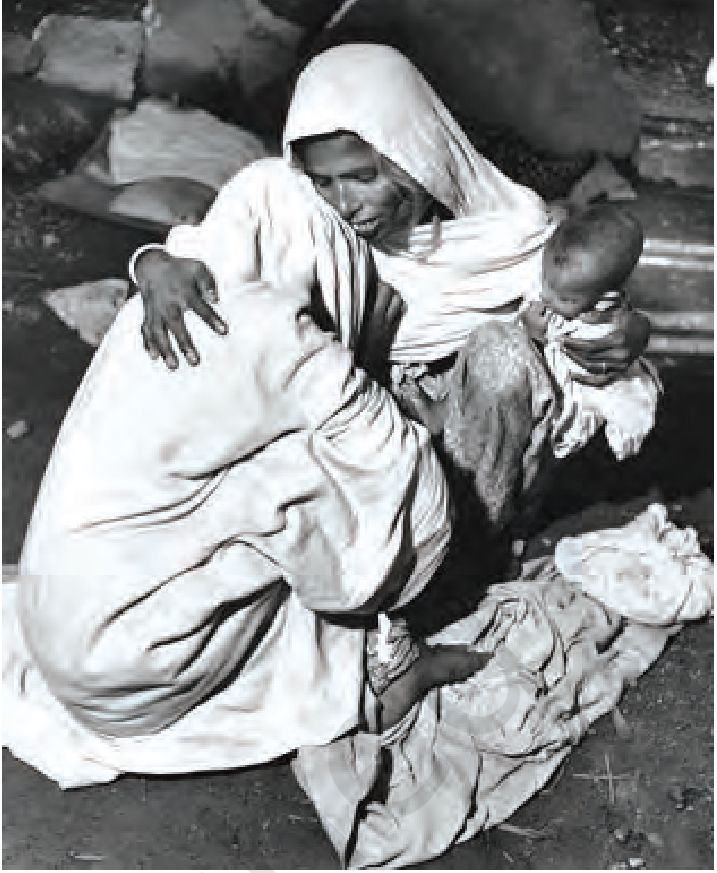
Fig. 14.12
Women console each other as they hear of the death of their family members.
Males died In larger numbers In the violence of rioting.
Here is the experience of a couple, recounted by Prakash Tandon in his Punjabi Century, an autobiographical social history of colonial Punjab:
In one instance, a Sikh youth who had run amuck during the Partition persuaded a massacring crowd to let him take away a young, beautiful Muslim girl. They got married, and slowly fell in love with each other. Gradually memories of her parents, who had been killed, and her former life faded. They were happy together, and a little boy was born. Soon, however, social workers and the police, labouring assiduously to recover abducted women, began to track down the couple. They made inquiries in the Sikh’s home-district of Jalandhar; he got scent of it and the family ran away to Calcutta. The social workers reached Calcutta. Meanwhile, the couple’s friends tried to obtain a stay-order from the court but the law was taking its ponderous course. From Calcutta the couple escaped to some obscure Punjab village, hoping that the police would fail to shadow them. But the police caught up with them and began to question them. His wife was expecting again and now nearing her time. The Sikh sent the little boy to his mother and took his wife to a sugar-cane field. He made her as comfortable as he could in a pit while he lay with a gun, waiting for the police, determined not to lose her while he was alive. In the pit he delivered her with his own hands. The next day she ran high fever, and in three days she was dead. He had not dared to take her to the hospital. He was so afraid the social workers and the police would take her away.
Scholars have also shown how ideas of preserving community honour came into play in this period of extreme physical and psychological danger. This notion of honour drew upon a conception of masculinity defined as ownership of zan (women) and zamin (land), a notion of considerable antiquity in North Indian peasant societies. Virility, it was believed, lay in the ability to protect your possessions - zan and zamin -from being appropriated by outsiders. And quite frequently, conflict ensued over these two prime “possessions”. Often enough, women internalised the same values.
At times, therefore, when the men feared that “their” women - wives, daughters, sisters - would be violated by the “enemy”, they killed the women themselves. Urvashi Butalia in her book, The Other Side of Silence, narrates one such gruesome incident in the village of Thoa Khalsa, Rawalpindi district. During Partition, in this Sikh village, ninety women are said to have “voluntarily” jumped into a well rather than fall into “enemy” hands. The migrant refugees from this village still commemorate the event at a gurdwara in Delhi, referring to the deaths as martyrdom, not suicide. They believe that men at that time had to courageously accept the decision of women, and in some cases even persuade the women to kill themselves. On 13 March every year, when their “martyrdom” is celebrated, the incident is recounted to an audience of men, women and children. Women are exhorted to remember the sacrifice and bravery of their sisters and to cast themselves in the same mould.
For the community of survivors, the remembrance ritual helps keep the memory alive. What such rituals do not seek to remember, however, are the stories of all those who did not wish to die, and had to end their lives against their will.
O Discuss...
What ideas led to the death and suffering of so many innocent women during the Partition? Why did the Indian and Pakistani governments agree to exchange “their” women?
Do you think they were right in doing so?
The experiences of ordinary people we have been discussing so far relate to the north-western part of the subcontinent. What was the Partition like in Bengal, Uttar Pradesh, Bihar, Central India and the Deccan? While carnages occurred in Calcutta and Noakhali in 1946, the Partition was most bloody and destructive in the Punjab. The near-total displacement of Hindus and Sikhs eastwards into India from West Punjab and of almost all Punjabi-speaking Muslims to Pakistan happened in a relatively short period of two years between 1946 and 1948.
Many Muslim families of Uttar Pradesh, Bihar, Madhya Pradesh and Hyderabad in Andhra Pradesh continued to migrate to Pakistan through the 1950s and early 1960s, although many chose to remain in India. Most of these Urdu-speaking people, known as rnuhqjirs (migrants) in Pakistan moved to the Karachi-Hyderabad region in Sind.
Fig. 14.13
Faces of despair
A massive refugee camp was set up in Purana Qlla In 1947 as migrants came pouring In from different places.
In Bengal the migration was even more protracted, with people moving across a porous border. This also meant that the Bengali division produced a process of suffering that may have been less concentrated but was as agonising. Furthermore, unlike the Punjab, the exchange of population in Bengal was not near-total. Many Bengali Hindus remained in East Pakistan while many Bengali Muslims continued to live in West Bengal. Finally, Bengali Muslims (East Pakistanis) rejected Jinnah’s two-nation theory through political action, breaking away from Pakistan and creating Bangladesh in 1971-72. A common religion could not hold East and West Pakistan together.
There is, however, a huge similarity between the Punjab and Bengal experiences. In both these states, women and girls became prime targets of persecution. Attackers treated women’s bodies as territory to be conquered. Dishonouring women of a community was seen as dishonouring the community itself, and a mode of taking revenge.
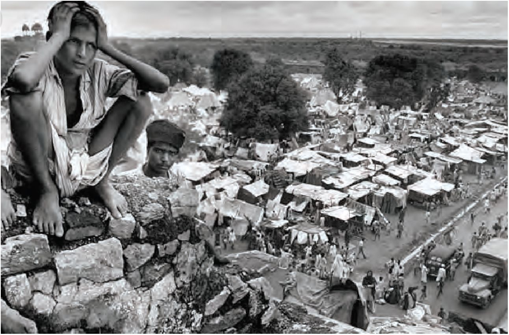
Fiction, Poetry, Films
Are you familiar with any short stories, novels, poems or films about Partition? More often than not, Partition literature and films represent this cataclysmic event in more insightful ways than do the works of historians. They seek to understand mass suffering and pain by focusing on an individual protagonist or small groups of ordinary people whose destinies were shaped by a big event over which they seemed to have no control. They record the anguish and the ambiguities of the times, the incomprehensible choices that many were confronted with. They register a sense of shock and bewilderment at the scale and magnitude of the violence, at human debasement and depravity. They also speak of hope and of the ways in which people overcame adversity.
Saadat Hasan Manto, a particularly gifted Urdu short-story writer, has this to say about his work:
For a long time I refused to accept the consequences of the revolution which was set off by the partition of the country. I still feel the same way; but I suppose, in the end, I came to accept this nightmarish reality without self-pity or despair. In the process I tried to retrieve from this manmade sea of blood, pearls of a rare hue, by writing about the single-minded dedication with which men had killed men, about the remorse felt by some of them, about the tears shed by murderers who could not understand why they still had some human feelings left. All this and more, I put in my book, Siyah Hashiye (Black Margins).
O Discuss...
Was your state or any neighbouring state affected by Partition? Find out how it affected the lives of men and women in the region and how they coped with the situation.
Partition literature and films exist in many languages, notably in Hindi, Urdu, Punjabi, Sindhi, Bengali, Assamese and English. You may want to read writers such as Manto, Rajinder Singh Bedi (Urdu), Intizar Husain (Urdu), Bhisham Sahni (Hindi), Kamaleshwar (Hindi), Rahi Masoom Raza (Hindi), Narain Bharati (Sindhi), Sant Singh Sikhon (Punjabi), Narendranath Mitra (Bengali), Syed Waliullah (Bengali), Lalithambika Antharjanam (Malayalam), Amitav Ghosh (English) and Bapsi Sidhwa (English). Amrita Pritam, Faiz Ahmed Faiz and Dinesh Das have written memorable poems on Partition in Punjabi, Urdu and Bengali respectively. You may also want to see films directed by Ritwik Ghatak (Meghe Dhaka Tara and Subarnarekha), M.S. Sathyu (Garam Hawa), Govind Nihalani (Tamas), and a play, Jis Lahore Nahin Vekhya O Jamya-e-nai (He Who Has Not Seen Lahore, Has Not Been Born) directed by Habib Tanvir.
Buried under the debris of the violence and pain of Partition is an enormous history of help, humanity and harmony. Many narratives such as Abdul Latifs poignant testimony, with which we began, reveal this. Historians have discovered numerous stories of how people helped each other during the Partition period, stories of caring and sharing, of the opening of new opportunities, and of triumph over trauma.
Consider, for instance, the work of Khushdeva Singh, a Sikh doctor specialising in the treatment of tuberculosis, posted at Dharampur in presentday Himachal Pradesh. Immersing himself in his work day and night, the doctor provided that rare healing touch, food, shelter, love and security to numerous migrants, Muslim, Sikh, Hindu alike. The residents of Dharampur developed the kind of faith and confidence in his humanity and generosity that the Delhi Muslims and others had in Gandhiji. One of them, Muhammad Umar, wrote to Khushdeva Singh: “With great humility I beg to state that I do not feel myself safe except under your protection. Therefore, in all kindness, be good enough to grant me a seat in your hospital.”
We know about the gruelling relief work of this doctor from a memoir he entitled Love is Stronger than Hate: A Remembrance of 1947. Here, Singh describes his work as “humble efforts I made to discharge my duty as a human being to fellow human beings”. He speaks most warmly of two short visits to Karachi in 1949. Old friends and those whom he
This is what Khushdeva Singh writes about his experience during one of his visits to Karachi in 1949:
My friends took me to a room at the airport where we all sat down and talked ... (and) had lunch together. I had to travel from Karachi to London ... at 2.30 a.m. ... At 5.00p.m. ... I told my friends that they had given me so generously of their time, I thought it would be too much for them to wait the whole night and suggested they must spare themselves the trouble. But nobody left until it was dinner time ... Then they said they were leaving and that I must have a little rest before emplaning. ... I got up at about 1.45 a.m. and, when I opened the door, I saw that all of them were still there ... They all accompanied me to the plane, and, before parting, presented me with a small basket of grapes. I had no words to express my gratitude for the overwhelming affection with which I was treated and the happiness this stopover had given me.
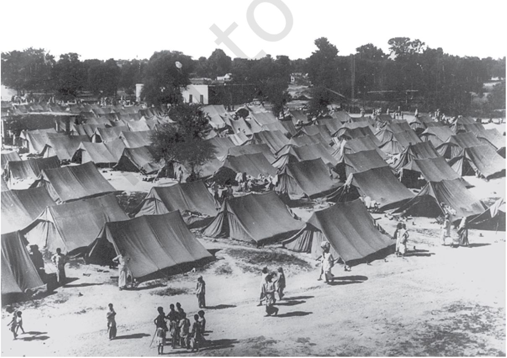
Fig. 14.14
The refugee camps everywhere overflowed with people who needed not just food and shelter, but also love and compassion.
O Discuss...
Find out more about ways in which people supported one another and saved lives during Partition.
had helped at Dharampur spent a few memorable hours with him at Karachi airport. Six police constables, earlier acquaintances, walked him to the plane, saluting him as he entered it. “I acknowledged (the salute) with folded hands and tears in my eyes.”
Have you taken note of the materials from which the history of Partition has been constructed in this chapter? Oral narratives, memoirs, diaries, family histories, first-hand written accounts - all these help us understand the trials and tribulations of ordinary people during the partition of the country. Millions of people viewed Partition in terms of the suffering and the challenges of the times. For them, it was no mere constitutional division or just the party politics of the Muslim League, Congress and others. For them, it meant the unexpected alterations in life as it unfolded between 1946 and 1950 and beyond, requiring psychological, emotional and social adjustments. As with the Holocaust in Germany, we should understand Partition not simply as a political event, but also through the meanings attached to it by those who lived it. Memories and experiences shape the reality of an event.
One of the strengths of personal reminiscence -one type of oral source - is that it helps us grasp experiences and memories in detail. It enables historians to write richly textured, vivid accounts of what happened to people during events such as Partition. It is impossible to extract this kind of information from government documents. The latter deal with policy and party matters and various state-sponsored schemes. In the case of Partition, government reports and files as well as the personal writings of its high-level functionaries throw ample light on negotiations between the British and the major political parties about the future of India or on the rehabilitation of refugees. They tell us little, however, about the day-to-day experiences of those affected by the government’s decision to divide the country.
Oral history also allows historians to broaden the boundaries of their discipline by rescuing from oblivion the lived experiences of the poor and the powerless: those of, say, Abdul Latifs father; the women of Thoa Khalsa; the refugee who retailed
wheat at wholesale prices, eking out a paltry living by selling the gunny bags in which the wheat came; a middle-class Bengali widow bent double over road-laying work in Bihar; a Peshawari trader who thought it was wonderful to land a petty job in Cuttack upon migrating to India but asked: “Where is Cuttack, is it on the upper side of Hindustan or the lower; we haven’t quite heard of it before in Peshawar?”
Thus, moving beyond the actions of the well off and the well known, the oral history of Partition has succeeded in exploring the experiences of those men and women whose existence has hitherto been ignored, taken for granted, or mentioned only in passing in mainstream history. This is significant because the histories that we read often regard the life and work of the mass of the people in the past as inaccessible or unimportant.
Yet, many historians still remain sceptical of oral history. They dismiss it because oral data seem to lack concreteness and the chronology they yield may be imprecise. Historians argue that the uniqueness of personal experience makes generalisation difficult: a large picture cannot be built from such micro-evidence, and one witness is no witness. They also think oral accounts are concerned with tangential issues, and that the small individual experiences which remain in memory are irrelevant to the unfolding of larger processes of history.
However, with regard to events such as the Partition in India and the Holocaust in Germany, there is no dearth of testimony about the different forms of distress that numerous people faced. So, there is ample evidence to figure out trends, to point out exceptions. By comparing statements, oral or written, by corroborating what they yield with findings from other sources, and by being vigilant about internal contradictions, historians can weigh the reliability of a given piece of evidence. Furthermore, if history has to accord presence to the ordinary and powerless, then the oral history of Partition is not concerned with tangential matters. The experiences it relates are central to the story, so much so that oral sources should be used to check other sources and vice versa. Different types of sources have to be tapped for answering different types of questions. Government reports, for instance, will tell us of the number of “recovered” women exchanged by the Indian and Pakistani states but it is the women who will tell us about their suffering.
We must realise, however, that oral data on Partition are not automatically or easily available. They have to be obtained through interviews that need to combine empathy with tact. In this context, one of the first difficulties is that protagonists may not want to talk about intensely personal experiences. Why, for instance, would a woman who has been raped want to disclose her tragedy to a total stranger? Interviewers have to often avoid enquiring into personal traumas. They have to build considerable rapport with respondents before they can obtain in-depth and meaningful data. Then, there are problems of memory. What people remember or forget about an event when they are interviewed a few decades later will depend in part on their experiences of the intervening years and on what has happened to their communities and nations during those years. The oral historian faces the daunting task of having to sift the “actual” experiences of Partition from a web of “constructed” memories.
In the final analysis, many different kinds of source materials have to be used to construct a comprehensive
Fig. 14.15 account of Partition, so that we see it not only as an
Not everyone could travel by event and process, but also understand the experiences cart, not everyone could walk... of those who lived through those traumatic times.
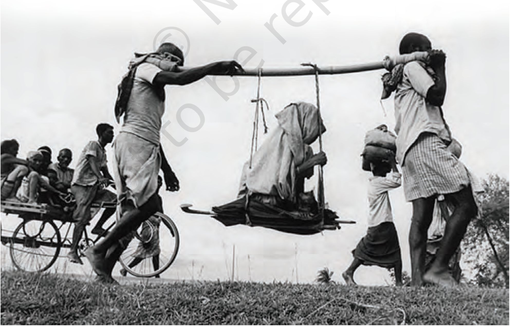
|
TIMELINE |
|
1930 |
The Urdu poet Mohammad Iqbal speaks of the need for a “North-West Indian Muslim state” as an autonomous unit within a single, loose Indian federation |
|
1933 |
The name Pakistan or Pak-stan is coined by a Punjabi Muslim student at Cambridge, Choudhry Rehmat Ali |
|
1937-39 |
Congress ministries come to power in seven out of 11 provinces of British India |
|
1940 |
The Muslim League moves a resolution at Lahore demanding a measure of autonomy for the Muslim-maJ ority areas |
|
1946 |
Elections are held in the provinces. The Congress wins massively in the general constituencies. The League’s success in the Muslim seats is equally spectacular |
|
March to June |
The British Cabinet sends a three-member Cabinet Mission to Delhi |
|
August |
The Muslim League decides on “Direct Action” for winning Pakistan |
|
16 August |
Violence breaks out between Hindus-Sikhs and Muslims in Calcutta, lasting several days and leaving several thousand people dead |
|
March 1947 |
The Congress high command votes for dividing the Punjab into Muslim-maJority and Hindu/Sikh-majority halves and asks for the application of a similar principle to Bengal; the British begin to quit India |
|
14-15 August |
Pakistan is formed; India gains independence. Mahatma Gandhi |
|
1947 |
tours Noakhali in East Bengal to restore communal harmony |
|
k __________________ |
A |
ANSWER IN 100-150 WORDS
-
1. What did the Muslim League demand through its resolution of 1940?
-
2. Why did some people think of Partition as a very sudden development?
-
3. How did ordinary people view Partition?
-
4. What were Mahatma Gandhi’s arguments against Partition?
-
5. Why is Partition viewed as an extremely significant marker in South Asian history?
If you would like to know more, read:
Jasodhara Bagchi and Subhoranjan Dasgupta (eds.). 2003. The Trauma and the Triumph: Gender and Partition in
Eastern India.
Stree, Kolkata.
AlokBhalla (ed.). 1994.
Stories About the Partition of India, Vols. I, II, III.
Indus (Harper Collins), New Delhi.
Urvashi Butalia. 1998.
The Other Side of Silence:
Voices from the Partition of India.
Viking (Penguin Books), New Delhi.
Mushirul Hasan, ed. 1996
India's Partition.
Oxford University Press, New Delhi.
Gyanendra Pandey. 2001.
Remembering Partition: Violence, Nationalism and
History in India.
Cambridge University Press, Cambridge.
Anita Inder Singh. 2006. The Partition of India.
National Book Trust, New Delhi.

Write a short essay
Jr (250-300 words) on the following:
-
6. Why was British India partitioned?
-
7. How did women experience Partition?
-
8. How did the Congress come to change its views on Partition?
-
9. Examine the strengths and limitations of oral history. How have oral-history techniques furthered our understanding of Partition?
-
10. On an outline map of South Asia, mark out Sections A, B and C of the Cabinet Mission proposals. How is this map different from the political map of present-day South Asia?
-
11. Find out about the ethnic violence that led to the partition of Yugoslavia. Compare your findings with what you have read about Partition in this chapter.
-
12. Find out whether there are any communities that have migrated to your city, town, village or any near-by place. (Your area may even have people who migrated to it during Partition.) Interview members of such communities and summarise your findings in a report. Ask people about the place they came from, the reasons for their migration, and their experiences. Also find out what changes the area witnessed as a result of this migration.
12125CH15